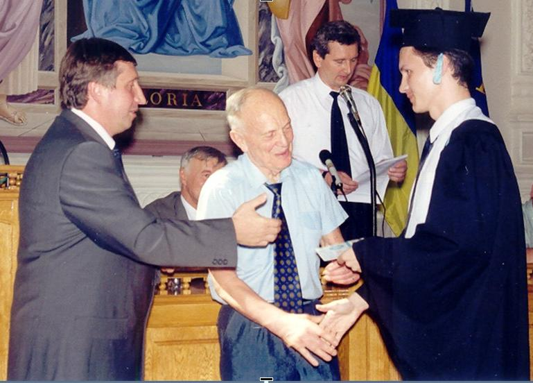

Історія факультету
В сучасних умовах ринкової економiки, прискореного розвитку наукоємних технологiй зростає попит на фахiвцiв з широкою загальнонауковою освiтою, що поєднується з вузькою спецiалiзацiєю, здатних швидко змiнювати рiд та характер професiйної дiяльностi, переоцiнювати накопичений досвiд, аналiзувати свої можливостi, набувати нових знань з використанням сучасних iнформацiйних технологiй, працювати над мiждисциплiнарними проектами, використовувати свої знання в рiзноманiтних галузях науки i технiки. Такi фахiвцi вкрай потрiбнi установам Нацiональної академiї наук України, Мiнiстерства освiти i науки України, державним структурам iнших мiнiстерств та вiдомств, а також структурам недержавної форми власностi, якi впроваджують наукоємнi технологiї.
Створена в 1999 роцi кафедра iнформацiйної безпеки, очолювана д.т.н. проф. Новiковим Олексiєм Миколайовичем, взяла на себе вiдповiдальнiсть за математичну, компьютерну, професiйно-орiєнтовану та спецiалiзовану пiдготовку студентiв в базових установах НАН України, iнших держбюджетних та комерцiйних установах за навчальним напрямом “Прикладна математика” (спецiальнiсть “iнформатика”, спецiалiзацiї “Прикладна iнформатика”, “Технологiя захисту iнформацiї”). Одночасно на кафедрi було започатковано пiдготовку фахiвцiв за новоствореним актуальним для розвитку вiтчизняної економiки навчальним напрямом “iнформацiйна безпека”. На базi фiзико-технiчного факультету в серпні 1999 року було створено Фiзико-технiчний iнститут (ФТI). Крiм фiзико-технiчного факультету до складу ФТI увiйшли факультет iнформацiйної безпеки (ФiБ), факультет довузiвської пiдготовки, комплекс навчальних лабораторiй з фiзики, навчальнi лабораторiї комп’ютерних технологiй, навчальний центр перепiдготовки та пiдвищення квалiфiкацiї фахiвцiв в галузi iнформацiйної безпеки, конструкторське бюро “Шторм” та науково-дослiдний центр “Акустика”. Разом з кафедрою iнформацiйної безпеки в складi ФiБ було створено кафедри математичних методiв захисту iнформацiї i фiзико-технiчних засобiв захисту iнформацiї.
Основною метою створення кафедри математичних методiв захисту iнформацiї (завiдувач – д.ф.-м.н., проф. Савчук Михайло Миколайович) є органiзацiя науково-педагогiчної дiяльностi та пiдготовка фахiвцiв у галузi математичних методiв захисту iнформацiї (спецiальнiсть “iнформатика”, спецiалiзацiя “Прикладна криптологiя” навчального напряму “Прикладна математика”) на базi фундаментальних курсiв з математичного аналiзу, алгебри, загальної алгебри, теорiї алгоритмiв та математичної логiки, дискретної математики, теорiї iмовiрностi та математичної статистики.
Кафедра фiзико-технiчних засобiв захисту iнформацiї (завiдувач – д.т.н., проф. Мачуський Євгенiй Андрiйович) готує спецiалiстiв у галузi технiчного захисту iнформацiї, за напрямом “iнформацiйна безпека” (спецiальнiсть “Захист iнформацiї з обмеженим доступом та автоматизацiя її обробки”). Кафедра веде навчальнi заняття зi студентами рiзних спецiальностей у фiзичних напрямах – акустики, електронiки, радiотехнiки, систем фiзико-технiчного захисту iнформацiї, науково-дослiднi роботи в галузi електронiки, акустики, радiотехнiки, iнерцiальних систем технiчного захисту iнформацiї.

Зараз Фiзико-технiчний інститут готує фахiвцiв, що забезпечують технологiчну незалежнiсть та iнформацiйну безпеку України. Протягом навчання студенти отримують освiту на рiвнi кращих унiверситетiв свiту, про що свiдчать неодноразовi переконливi перемоги на Мiжнародних студентських олiмпiадах у Лондонi, Будапештi Тегеранi, Празi. Випускники працюють в установах НАН України, органах державної влади України, установах i компанiях державної та недержавної форми власностi, де основними вимогами до спiвробiтникiв є високий iнтелект, глибокi знання, здiбнiсть працювати в умовах жорстокої iнтелектуальної конкуренцiї.